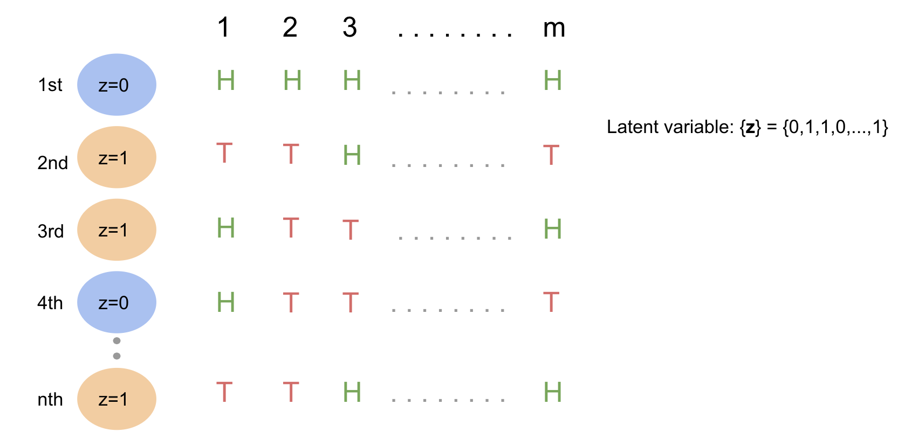

Topic 4 Example: Binomial Mixture Model
4.1 Overview of Binomial Mixture Model
A binomial mixture model is a statistical model that allows for the possibility that the observed data is generated from a mixture of two or more binomial distributions. In other words, the model assumes that the data comes from two or more groups or sub-populations, each of which may have a different probability of success for a given binary outcome.
For example, consider a study of the effectiveness of a new medication in treating a disease. The data may consist of the number of patients who respond positively to the medication and the number who do not. If there are two or more sub-populations of patients with different response rates, a binomial mixture model can be used to model the data.
The binomial mixture model is a useful tool for modeling data that comes from multiple sub-populations with different characteristics. It has applications in many areas, including medicine, biology, marketing, and finance.
4.2 Flipping Coins Example Illustrated
4.2.1 Scenario
Assume we have 2 biased coins indexed \(z=0\) and \(z=1\) with probability \(p_0\) and \(p_1\) of landing heads, respectively.
Suppose we randomly pick one of the coins and flip it m times, and do this procedure for \(n\) trials, and we observe and record the \(m × n\) results: \(X_{11}, ..., X_{mn}\), where \(X_{ij}\) is the r.v. denoting the outcome of the \(i^{th}\) coin flip from the \(j^{th}\) trial, with \(X_{ij} = 1\) indicating heads and \(X_{ij} = 0\) indicating tails.

Then, we have that
\[ X_i\mid_{z=0} \sim Bernoulli(p_0) \]
\[ X_i\mid_{z=1} \sim Bernoulli(p_1) \]
Equivalently,
\[ \sum_{i=1}^{m}X_i\mid_{z=0} \sim Binomial(m, p_0) \]
\[ \sum_{i=1}^{m}X_i\mid_{z=1} \sim Binomial(m, p_1) \]
If the sequence \(\{z_j\}\), where \(j\) indexing individual trials, is given, we can simply use MLE to estimate \(p_0\) and \(p_1\) that maximize the probability that we observed the outcomes that we observed.
However, when the sequence \(\{z_j\}\) is unknown, we should use the EM algorithm!
4.2.2 Algorithm steps
Following the steps we discussed in the previous video, the complete procedure of deriving the estimates can be summarized as follows.
Step 1 Pick initial guess: \(p_0^{(t=0)}\) and \(p_1^{(t=0)}\).
Step 2 Derive the joint pdf
Recall that we denote the true probability of the coin indexed \(z=0\) landing heads to be \(p_0\) and the true probability of the coin indexed \(z=1\) landing heads to be \(p_1\). Assume \(p_0 = p_0^{(t)}\) and \(p_1 = p_1^{(t)}\). Get the joint pdf as follows.
\[ P(X_{11},\cdots, X_{mn}, \mathbf{z}\mid p_0^{(t)}, p_1^{(t)}) = \prod_{j=1}^{n}\frac{1}{2}[{p_0^{(t)}}^{\sum_{i=1}^{m}X_{ij}}{(1-p_0^{(t)})}^{m-\sum_{i=1}^{m}X_{ij}}]^{1-z_j} [{p_1^{(t)}}^{\sum_{i=1}^{m}X_{ij}}{(1-p_1^{(t)})}^{m-\sum_{i=1}^{m}X_{ij}}]^{z_j} \]
Step 3 Get Q-function using the joint pdf we got in step 2.
Let \(\mathbf{p} = (p_0, p_1)\) and \(\mathbf{p}^t = (p_0^t, p_1^t)\).
Recall the Q-function defined as follow in this specific scenario.
\[ Q(p;p^t) = \mathbb{E}_{\mathbf{z}\mid \mathbf{x}, p^{t}}\log p(\mathbf{x},\mathbf{z}\mid \mathbf{p}) \]
, where \(z\) denotes our missing data, \(x\) is the observations.
\[ \begin{aligned} \log{p(\mathbf{x}, \mathbf{z}\mid p_0, p_1)} &= n\log{\frac{1}{2}} +\sum_{j=1}^{n}[(1-z_j)\log{[p_0^{\sum_{i=1}^{m}x_{ij}}(1-p_0)^{m-\sum_{i=1}^{m}x_{ij}}]} \\ &+ z_j \log{[p_1^{\sum_{i=1}^{m}x_{ij}}(1-p_1)^{m-\sum_{i=1}^{m}x_{ij}}]}] \end{aligned} \]
Ignore the constant \(n\log{\frac{1}{2}}\), then we have
\[ \begin{aligned} \log{p(\mathbf{x}, \mathbf{z}\mid p_0, p_1)} \approx \sum_{j=1}^{n}[(1-z_j)\log{[p_0^{\sum_{i=1}^{m}x_{ij}}(1-p_0)^{m-\sum_{i=1}^{m}x_{ij}}]} \\ + z_j \log{[p_1^{\sum_{i=1}^{m}x_{ij}}(1-p_1)^{m-\sum_{i=1}^{m}x_{ij}}]}] \end{aligned} \]
The Q-function can thus be written as follows.
\[ \begin{aligned} Q(p;p^t) &\approx \sum_{j=1}^{n}[(1-\mathbb{E}(z_j))\log{[p_0^{\sum_{i=1}^{m}x_{ij}}(1-p_0)^{m-\sum_{i=1}^{m}x_{ij}}]} \\ &+ \mathbb{E}(z_j)\log{[p_1^{\sum_{i=1}^{m}x_{ij}}(1-p_1)^{m-\sum_{i=1}^{m}x_{ij}}]}] \end{aligned} \]
Then, let’s calculated the expected value of \(\textbf{z}\).
\[ \begin{aligned} &\mathbb{E}_{\mathbf{z}\mid \mathbf{x},\mathbf{p}^{t}}[z_j] = p(z_j=1\mid \sum_{i=1}^{m}X_i, \mathbf{p}^t) \text{ , because } z_j \sim Bernoulli(0.5) \\ &= \frac{p(\sum_{i=1}^{m} X_i \mid z_j=1, \mathbf{p}^t)p(z_j=1)}{\sum_{j=1}^{n} p(\sum_{i=1}^{m} X_i \mid z_j, \mathbf{p}^t)p(z_j)} \text{ , Bayes' Rule } \\ &= \frac{p(\sum_{i=1}^{m} X_i \mid z_j=1, \mathbf{p}^t)p(z_j=1)}{ p(\sum_{i=1}^{m} X_i \mid z_j=1, \mathbf{p}^t)p(z_j=1)+p(\sum_{i=1}^{m} X_i \mid z_j=0, \mathbf{p}^t)p(z_j=0)} \\ &= \frac{p(\sum_{i=1}^{m} X_i \mid z_j=1, \mathbf{p}^t)p(z_j=1)}{ p_1^{\sum_{i=1}^{m} X_i}(1-p_1)^{m-\sum_{i=1}^{m} X_i}p(z_j=1)+p_0^{\sum_{i=1}^{m} X_i}(1-p_0)^{m-\sum_{i=1}^{m} X_i}p(z_j=0)} \\ &\text{ , because }\sum_{i=1}^{m} X_i \text{ follows binomial distribution}\\ \end{aligned} \]
We have our initial guess or guess from last iteration for \(p_0\), \(p_1\), and we have observed \(\sum X_i, m\), and we assumed that \(P(z_j=1) = P(z_j=0) = \frac{1}{2}\). Thus, we can calculate \(\mathbb{E}(z_j)\). Now, we take \(\mathbb{E}(z_j)\) as known.
Step 4 Make new guess \(p_0^{t+1}\) and \(p_1^{t+1}\).
\[ \mathbf{p}^{t+1} = \underset{\mathbf{p}}{\operatorname{argmax}} Q(\mathbf{p};\mathbf{p}^t) \]
To maximize the Q-function \(Q(\mathbf{p};\mathbf{p}^{t})\), we take the derivative of it and set it to zero. Since \(\mathbf{p}\) contains \(p_0\) and \(p_1\), we need to take 2 derivatives.
First, take the derivative of the Q-function with respect to \(p_0\) and set it to zero. \[ \begin{aligned} \frac{d Q(\mathbf{p};\mathbf{p}^t)}{d p_0^t} &= \frac{d}{d p_0} \sum_{j=1}^{n}[(1-\mathbb{E}(z_j))\log{[p_0^{ \sum_{i=1}^{m}x_{ij}}(1-p_0)^{m- \sum_{i=1}^{m}x_{ij}}]} \\ & \quad\; + \mathbb{E}(z_j) \log{[p_1^{ \sum_{i=1}^{m}x_{ij}}(1-p_1)^{m-\sum_{i=1}^{m}x_{ij}}]}] \\ &= \frac{d}{d p_0} \sum_{j=1}^{n}[(1-\mathbb{E}(z_j))\log{[p_0^{\sum_{i=1}^{m}x_{ij}}(1-p_0)^{m-\sum_{i=1}^{m}x_{ij}}]}]\\ &= \frac{d}{d p_0} \sum_{j=1}^{n}[(1-\mathbb{E}(z_j))(\sum_{i=1}^{m}x_{ij}\log{p_0} + (m-\sum_{i=1}^{m}x_{ij})\log(1-p_0)]\\ &=\sum_{j=1}^{n} (1-\mathbb{E}(z_j))(\frac{\sum_{i=1}^{m} X_{ij}}{p_0} - \frac{m-\sum_{i=1}^{m}X_{ij}}{1-p_0})\\ &\stackrel{set}{=} 0 \\ \end{aligned} \]
Solve the score function to get \(\hat{p}_0\).
\[ \begin{aligned} \sum_{j=1}^{n} (1-\mathbb{E}(z_j))(\frac{\sum_{i=1}^{m} X_{ij}}{p_0} - \frac{m-\sum_{i=1}^{m}X_{ij}}{1-p_0}) &\stackrel{set}{=} 0 \\ \frac{\sum_{j=1}^{n}((1-\mathbb{E}(z_j))\sum_{i=1}^{m}x_{ij})}{p_0} &= \frac{\sum_{j=1}^{n}((1-\mathbb{E}(z_j))(m-\sum_{i=1}^{m}x_{ij}))}{1-p_0} \\ (1-p_0)\sum_{j=1}^{n}((1-\mathbb{E}(z_j))\sum_{i=1}^{m}x_{ij}) &= p_0\sum_{j=1}^{n}((1-\mathbb{E}(z_j))(m-\sum_{i=1}^{m}x_{ij})) \\ \sum_{j=1}^{n}((1-\mathbb{E}(z_j))\sum_{i=1}^{m}x_{ij}) - p_0\sum_{j=1}^{n}((1-\mathbb{E}(z_j))\sum_{i=1}^{m}x_{ij}) &= mp_0\sum_{j=1}^{n}(1-\mathbb{E}(z_j)) - p_0\sum_{j=1}^{n}((1-\mathbb{E}(z_j)\sum_{i=1}^{m}x_{ij}) \\ \sum_{j=1}^{n}((1-\mathbb{E}(z_j))\sum_{i=1}^{m}x_{ij}) &= mp_0\sum_{j=1}^{n}(1-\mathbb{E}(z_j)) \\ \hat{p}_0 &= \frac{\sum_{j=1}^{n}((1-\mathbb{E}(z_j))\sum_{i=1}^{m}x_{ij})}{m\sum_{j=1}^{n}(1-\mathbb{E}(z_j))} \end{aligned} \]
Next, take the derivative of the Q-function with respect to \(p_1\) and set it to zero.
\[ \begin{aligned} \frac{d Q(\mathbf{p};\mathbf{p}^t)}{d p_1^t} &= \frac{d}{d p_1} \sum_{j=1}^{n}[(1-\mathbb{E}(z_j))\log{[p_0^{ \sum_{i=1}^{m}x_{ij}}(1-p_0)^{m- \sum_{i=1}^{m}x_{ij}}]} \\ & \quad\; + \mathbb{E}(z_j) \log{[p_1^{ \sum_{i=1}^{m}x_{ij}}(1-p_1)^{m-\sum_{i=1}^{m}x_{ij}}]}] \\ &= \frac{d}{d p_1} \sum_{j=1}^{n}[\mathbb{E}(z_j)\log{[p_1^{\sum_{i=1}^{m}x_{ij}}(1-p_1)^{m-\sum_{i=1}^{m}x_{ij}}]}]\\ &= \frac{d}{d p_1} \sum_{j=1}^{n}[\mathbb{E}(z_j)(\sum_{i=1}^{m}x_{ij}\log{p_1} + (m-\sum_{i=1}^{m}x_{ij})\log(1-p_1)] \\ &=\sum_{j=1}^{n} \mathbb{E}(z_j)(\frac{\sum_{i=1}^{m} x_{ij}}{p_1} - \frac{m-\sum_{i=1}^{m}x_{ij}}{1-p_1})\\ &\stackrel{set}{=} 0 \\ \end{aligned} \]
Solve the score function to get \(\hat{p}_1\).
\[ \begin{aligned} \sum_{j=1}^{n} \mathbb{E}(z_j)(\frac{\sum_{i=1}^{m} x_{ij}}{p_1} - \frac{m-\sum_{i=1}^{m}x_{ij}}{1-p_1}) &\stackrel{set}{=} 0 \\ \frac{\sum_{j=1}^{n}\mathbb{E}(z_j)\sum_{i=1}^{m} x_{ij}}{p_1} &= \frac{\sum_{j=1}^{n}\mathbb{E}(z_j)(m-\sum_{i=1}^{m}x_{ij})}{1-p_1} \\ (1-p_1)\sum_{j=1}^{n}\mathbb{E}(z_j)\sum_{i=1}^{m} x_{ij} &= p_1\sum_{j=1}^{n}\mathbb{E}(z_j)(m-\sum_{i=1}^{m}x_{ij}) \\ \sum_{j=1}^{n}\mathbb{E}(z_j)\sum_{i=1}^{m} x_{ij} - p_1\sum_{j=1}^{n}\mathbb{E}(z_j)\sum_{i=1}^{m} x_{ij} &= mp_1\sum_{j=1}^{n}\mathbb{E}(z_j) - \sum_{j=1}^{n}\mathbb{E}(z_j)\sum_{i=1}^{m}x_{ij}\\ \sum_{j=1}^{n}\mathbb{E}(z_j)\sum_{i=1}^{m} x_{ij} &= mp_1\sum_{j=1}^{n}\mathbb{E}(z_j) \\ \hat{p}_1 = \frac{\sum_{j=1}^{n}\mathbb{E}(z_j)\sum_{i=1}^{m} x_{ij}}{m\sum_{j=1}^{n}\mathbb{E}(z_j)} \end{aligned} \]
We set \(p_0^{t+1} = \hat{p}_0\) and \(p_1^{t+1} = \hat{p}_1\) to let those estimates be our estimated results for this new iteration.
Step 5 Condition to stop otherwise keep iterating
If it reaches numerical precision when comparing \(\textbf{p}^{t}\) and \(\textbf{p}^{t+1}\), we stop the procedure and take the estimates from the last iteration as our results.
Otherwise, let \(t=t+1\), and repeat step 2-5 until it reaches numerical precision.
4.3 Implementation in R
4.3.1 Simplified case (2-coin)
Set up
set.seed(455)
K = 2 # number of coins we have
p = runif(K) # the probability of each coin to fall on Heads (TRUE PARAMETER!)
n = 1000 # number of trials
m = 10 # number of flips per trial
# Note here that we are using one single coin for a whole trial, we never change coins within one trial# Latent - coin sequence - sequence with 0 and 1, where 0 on the ith spot means we are using the z = 0 coin on the ith trial
(z = rbinom(n,1,0.5))## [1] 0 1 1 1 1 1 1 0 1 1 1 0 1 1 1 1 1 0 1 0 1 0 1 1 0 1 1 0 1 1 1 1 0 1 0
## [36] 1 1 1 0 0 0 0 0 0 1 0 0 1 1 0 0 1 1 0 0 0 1 1 0 1 1 0 1 1 1 1 0 1 0 1
## [71] 1 0 1 1 0 0 0 0 1 0 0 0 1 0 1 0 1 1 1 0 0 1 1 1 1 1 0 0 1 1 0 1 0 0 1
## [106] 1 0 1 0 1 0 0 0 0 1 0 0 0 0 1 0 1 1 1 1 1 1 1 0 1 1 1 1 0 1 0 1 1 1 0
## [141] 1 0 0 0 0 1 1 1 0 1 0 1 1 1 0 0 1 0 1 0 0 0 0 0 0 0 0 1 1 1 1 1 0 1 1
## [176] 0 1 0 0 0 0 1 1 0 1 1 0 0 0 0 0 1 1 0 0 0 1 1 1 1 1 0 1 1 1 0 0 0 1 0
## [211] 0 1 0 1 1 1 0 1 1 0 1 0 0 0 0 1 1 0 0 0 1 0 1 1 1 1 0 0 0 1 1 0 0 0 0
## [246] 0 1 0 1 0 0 0 1 1 1 0 0 0 0 1 0 1 1 1 1 1 1 1 1 0 0 0 0 0 0 1 1 0 1 1
## [281] 0 1 0 0 0 0 0 1 0 1 0 0 0 1 0 1 1 1 1 0 0 0 0 1 1 0 0 0 1 1 0 0 0 0 0
## [316] 0 1 1 0 1 0 1 1 1 0 0 1 0 0 1 1 1 1 1 1 0 1 1 1 0 1 0 0 1 1 0 0 0 0 0
## [351] 0 1 0 1 1 1 0 1 1 0 0 0 0 1 1 1 1 0 0 0 1 1 1 1 1 0 0 0 1 0 0 1 0 1 0
## [386] 0 1 0 0 0 0 1 1 1 1 1 1 1 0 1 1 1 1 1 1 0 0 0 1 0 0 1 0 1 1 0 0 0 0 1
## [421] 0 1 1 1 1 0 0 1 1 0 1 1 1 1 0 0 1 1 0 1 0 0 0 1 1 0 1 0 1 0 1 1 0 0 1
## [456] 0 0 0 1 1 1 1 0 0 0 1 1 1 1 0 1 1 0 1 0 0 0 1 1 1 0 0 1 1 0 1 1 0 1 1
## [491] 0 1 1 1 0 0 0 1 0 1 0 1 1 1 1 1 0 1 0 1 0 1 0 0 0 0 1 1 0 1 0 0 0 1 1
## [526] 0 0 0 1 1 1 1 0 1 1 1 1 1 1 1 1 1 1 0 0 1 0 1 1 0 1 0 0 0 1 1 0 1 0 0
## [561] 1 1 1 1 0 1 0 0 1 0 0 0 0 0 0 0 0 0 0 0 0 1 1 1 1 1 1 1 1 0 0 0 1 0 0
## [596] 1 0 1 1 0 1 0 1 1 0 1 0 0 0 0 1 1 0 0 0 0 1 0 0 1 0 1 0 0 0 1 0 1 1 0
## [631] 0 0 1 1 1 0 1 1 0 1 1 1 0 0 1 1 0 1 0 0 1 1 0 0 0 1 1 1 0 0 1 1 1 1 1
## [666] 1 1 0 0 0 1 1 1 0 0 0 0 1 0 0 0 1 1 0 0 1 1 0 1 0 1 0 1 0 0 1 1 0 0 0
## [701] 1 1 0 0 0 0 1 0 0 1 1 1 0 0 1 0 0 0 0 0 1 1 1 0 0 0 1 1 1 0 1 1 1 1 1
## [736] 0 0 0 1 0 0 1 1 0 1 0 0 0 1 1 1 1 1 1 1 0 1 1 1 1 1 0 0 0 1 0 1 0 1 0
## [771] 1 0 1 0 0 1 1 1 0 0 0 0 0 1 1 1 1 1 1 1 1 0 1 1 1 1 1 0 1 1 1 0 0 0 1
## [806] 0 1 1 1 1 0 1 1 0 1 1 1 1 0 1 1 0 0 1 1 1 0 0 0 0 0 1 1 1 0 0 1 1 0 0
## [841] 1 0 0 0 0 1 1 0 0 1 0 1 0 1 1 0 0 0 1 1 0 1 1 1 0 1 0 1 0 1 0 0 0 1 1
## [876] 0 0 0 0 0 0 0 0 1 0 0 1 0 1 1 0 1 1 0 0 0 1 0 0 0 1 0 1 1 1 0 0 0 0 1
## [911] 0 0 1 1 0 1 0 1 1 1 0 1 0 1 0 1 1 0 0 0 1 0 1 1 1 1 1 1 1 1 1 0 0 0 1
## [946] 1 0 1 1 1 0 1 0 0 0 0 1 1 0 1 0 0 1 0 1 0 1 1 1 1 0 0 0 1 0 1 0 1 0 1
## [981] 1 1 1 0 0 1 0 1 0 1 1 1 0 1 0 0 1 1 0 0# Observed - simulating the observed head/tail for individual flips based on the true probability of each coin to fall on Heads/tails
x = matrix(nrow = n, ncol = m)
# Fill in the observation matrix
for(j in 1:n){ # for each trial
pj = p[z[j]+1] # assign the corresponding probability of landing heads to pi
# Note: Why do we need to plus one here?
# The probability of landing heads for coin z=0 is stored at p[1]
# The probability of landing heads for coin z=1 is stored at p[2]
x[j,] = rbinom(m, 1, pj) # simulate the flips in an individual trial, with 1 denoting head and 0 denoting tail
}Estimation
1st step: pick initial guess of \(p_0^{t=0}\) and \(p_1^{t=0}\)
# Let's just let R decide our initial guess here!
(initialp = runif(2))## [1] 0.2650827 0.75312832nd step: Get the likelihood function of the complete data assuming our current guesses are the true value of the probabilities of landing heads
\[ \mathbb{P}(X_{11},...,X_{mn}, \textbf{z}\mid p_0^{(t)}, p_1^{(t)}) = \prod_{j=1}^{n}\frac{1}{2}[{p_0^{(t)}}^{\sum_{i=1}^{m}X_{ij}}{(1-p_0^{(t)})}^{m-\sum_{i=1}^{m}X_{ij}}]^{1-z_j} [{p_1^{(t)}}^{\sum_{i=1}^{m}X_{ij}}{(1-p_1^{(t)})}^{m-\sum_{i=1}^{m}X_{ij}}]^{z_j} \]
3rd step: get the Q-function
\[ Q(p;p^t) = \mathbb{E}_{\mathbf{z}\mid \mathbf{x}, p^{t}}\log p(\mathbf{x},\mathbf{z}\mid \mathbf{p}) \]
\[ \begin{aligned} Q(p;p^t) &\approx \sum_{j=1}^{n}[(1-\mathbb{E}(z_j))\log{[p_0^{\sum_{i=1}^{m}x_{ij}}(1-p_0)^{m-\sum_{i=1}^{m}x_{ij}}]} \\ &+ \mathbb{E}(z_j)\log{[p_1^{\sum_{i=1}^{m}x_{ij}}(1-p_1)^{m-\sum_{i=1}^{m}x_{ij}}]}] \end{aligned} \]
In the video, we mentioned that we are able to calculate the expected value of z for each trial, where z denotes which coin we use for that trial. We calculate it here for later use.
\[ \begin{aligned} &\mathbb{E}_{\mathbf{z}\mid \mathbf{x},\mathbf{p}^{t}}[z_j] = p(z_j=1\mid \sum_{i=1}^{m}X_i, \mathbf{p}^t) \text{ , because } z_j \sim Bernoulli(0.5) \\ &= \frac{p(\sum_{i=1}^{m} X_i \mid z_j=1, \mathbf{p}^t)p(z_j=1)}{\sum_{j=1}^{n} p(\sum_{i=1}^{m} X_i \mid z_j, \mathbf{p}^t)p(z_j)} \text{ , Bayes' Rule } \\ &= \frac{p(\sum_{i=1}^{m} X_i \mid z_j=1, \mathbf{p}^t)p(z_j=1)}{ p(\sum_{i=1}^{m} X_i \mid z_j=1, \mathbf{p}^t)p(z_j=1)+p(\sum_{i=1}^{m} X_i \mid z_j=0, \mathbf{p}^t)p(z_j=0)} \\ &= \frac{p(\sum_{i=1}^{m} X_i \mid z_j=1, \mathbf{p}^t)p(z_j=1)}{ p_1^{\sum_{i=1}^{m} X_i}(1-p_1)^{m-\sum_{i=1}^{m} X_i}p(z_j=1)+p_0^{\sum_{i=1}^{m} X_i}(1-p_0)^{m-\sum_{i=1}^{m} X_i}p(z_j=0)} \\ &\text{ , because }\sum_{i=1}^{m} X_i \text{ follows binomial distribution} \end{aligned} \]
# Calculate the expected value of z for each trial
getExpectedZ = function(p){
E = rep(NA,n) # initialize a new vector for storing expected sequence of z, since we have n trials, the length of the sequence should be set to n
for(j in 1:n){
trialsum = sum(x[j,]) # get the flip outcomes from the ith trial, store them as a vector named xi
n1 = (p[2] ^ trialsum) * ((1 - p[2]) ^ (m - trialsum)) * (1/2) # probability of observing the number of heads we observed when we use coin z = 1
n0 = (p[1] ^ trialsum) * ((1 - p[1]) ^ (m - trialsum)) * (1/2) # probability of observing the number of heads we observed when we use coin z = 0
E[j] = n1/(n1+n0) # expected value of z at the jth trial
}
return(E) # expected sequence of z
}4th step: Make new guess for \(p_0^{t+1}\) and p_1^{t+1}
Recall that we derived:
\[ p_0^{t+1} = \frac{\sum_{j=1}^{n}(1-\mathbb{E}(z_j))\sum_{i=1}^{m}X_{ij}}{m\sum_{j=1}^{n}(1-\mathbb{E}(z_j))} \]
\[ p_1^{t+1} = \frac{\sum_{j=1}^{n}\mathbb{E}(z_j)\sum_{i=1}^{m}X_{ij}}{m\sum_{j=1}^{n}(\mathbb{E}(z_j)} \]
getNewGuess = function(E){
p=rep(NA, K) # initialize a new vector for storing expected sequence of z, since we have two coins, the length of the s equence should be set to 2, which is K
trialsums = rowSums(x) # get the sum of flip outcomes for each trial, store them as a vector named trialsums
# Note: suppose we conducted 2 trials and we observed 4 heads in the first trial and 5 heads in the second, trialsums = (4,5)
p[1] = sum((1-E)*trialsums)/(m*sum(1-E)) # calculate new estimate for the probability of landing heads for coin z = 0
p[2] = sum(E*trialsums)/(m*sum(E)) # calculate new estimate for the probability of landing heads for coin z = 1
return(p) # return the new set of estimates for this iteration
}5th step: create the iterative function with a deciding mechanism for whether we continue the iteration process or stop
# EM
EM = function(initialguess, maxIter=50, tol=1e-5){ # we set default values to maxIter and tol, but try out different values here to see what happens.
pt=initialguess
for(i in 1:maxIter){
E = getExpectedZ(pt) # the E step
pt = getNewGuess(E) # the M step
cat("Iteration: ", i, "pt: ",pt,"\n")
print(pt) # print the new set of estimates of parameters for every iteration
if(norm(pt-p,type="2") < tol) break # if the new estimates are similar enough to the estimates from the last iteration, we stop the process and take the estimates we get from the new iteration as our final estimates
p = pt # Otherwise, we regard this new set of estimates as "previous" and get new estimates based on that
}
return(pt)
}Put our initial guess for p into the function EM to get the EM estimates of \(p_0\) and \(p_1\):
sort(EM(initialp))## Iteration: 1 pt: 0.4740147 0.8322268
## [1] 0.4740147 0.8322268
## Iteration: 2 pt: 0.5761333 0.8824783
## [1] 0.5761333 0.8824783
## Iteration: 3 pt: 0.6197177 0.9098317
## [1] 0.6197177 0.9098317
## Iteration: 4 pt: 0.6391757 0.9240014
## [1] 0.6391757 0.9240014
## Iteration: 5 pt: 0.648519 0.9315073
## [1] 0.6485190 0.9315073
## Iteration: 6 pt: 0.6533188 0.935579
## [1] 0.6533188 0.9355790
## Iteration: 7 pt: 0.6559 0.9378264
## [1] 0.6559000 0.9378264
## Iteration: 8 pt: 0.6573252 0.9390812
## [1] 0.6573252 0.9390812
## Iteration: 9 pt: 0.658123 0.939787
## [1] 0.658123 0.939787
## Iteration: 10 pt: 0.658573 0.9401857
## [1] 0.6585730 0.9401857
## Iteration: 11 pt: 0.6588277 0.9404117
## [1] 0.6588277 0.9404117
## Iteration: 12 pt: 0.6589721 0.9405398
## [1] 0.6589721 0.9405398
## Iteration: 13 pt: 0.6590542 0.9406126
## [1] 0.6590542 0.9406126
## Iteration: 14 pt: 0.6591008 0.940654
## [1] 0.6591008 0.9406540
## Iteration: 15 pt: 0.6591273 0.9406775
## [1] 0.6591273 0.9406775
## Iteration: 16 pt: 0.6591423 0.9406909
## [1] 0.6591423 0.9406909
## Iteration: 17 pt: 0.6591509 0.9406985
## [1] 0.6591509 0.9406985
## Iteration: 18 pt: 0.6591558 0.9407028
## [1] 0.6591558 0.9407028## [1] 0.6591558 0.9407028Check the TRUE PARAMETERS that we set at the very start:
sort(p)## [1] 0.6563497 0.9495199Comparing our EM estimates to the true parameters here, we think they are reasonably close enough to each other.
Now we can also think about how the EM algorithm uses the E vector in our code. Each time we run the iteration, we make a new E vector, which is our guess as to what the latent data is.
This code chunk prints out the first 10 spots of our first 5 E vectors, what do the numbers in the vectors represent?
# EM
EM2 = function(initialguess, maxIter=50, tol=1e-5){ # we set default values to maxIter and tol, but try out different values here to see what happens.
pt=initialguess
for(i in 1:5){
E = getExpectedZ(pt)# the E step, what does this function take in? what vector does it use to get E(Z)?
cat("Iteration: ", i, "E: ",E[1:10], sep = "\n")
pt = getNewGuess(E) # do the M step
# what does this function NEED to make its p estimate
# print the new set of estimates of parameters for every iteration
if(norm(pt-p,type="2") < tol) break # if the new estimates are similar enough to the estimates from the last iteration, we stop the process and take the estimates we get from the new iteration as our final estimates
p = pt # Otherwise, we regard this new set of estimates as "previous" and get new estimates based on that
}
return(pt)
}EM2(initialp)## Iteration:
## 1
## E:
## 0.9999708
## 0.9997532
## 0.4418945
## 0.4418945
## 0.9979168
## 0.9997532
## 0.9826505
## 0.9979168
## 0.4418945
## 0.9826505
## Iteration:
## 2
## E:
## 0.9964195
## 0.9806047
## 0.05220458
## 0.05220458
## 0.90182
## 0.9806047
## 0.6252952
## 0.90182
## 0.05220458
## 0.6252952
## Iteration:
## 3
## E:
## 0.9861285
## 0.9278927
## 0.01362668
## 0.01362668
## 0.6996368
## 0.9278927
## 0.2965831
## 0.6996368
## 0.01362668
## 0.2965831
## Iteration:
## 4
## E:
## 0.9789578
## 0.8825419
## 0.005085807
## 0.005085807
## 0.5482229
## 0.8825419
## 0.1638661
## 0.5482229
## 0.005085807
## 0.1638661
## Iteration:
## 5
## E:
## 0.9755254
## 0.853101
## 0.002610219
## 0.002610219
## 0.4583275
## 0.853101
## 0.1097509
## 0.4583275
## 0.002610219
## 0.1097509## [1] 0.6485190 0.93150734.3.2 Generalized case (k-coin)
#install.packages("extraDistr") # uncommented this line to install the package if you haven't already
library(extraDistr)
K = 5 # set the number of distinct coins, try different numbers of coins here to see what happens:)
Kplus1 = K + 1
p = seq(1/Kplus1, 1-1/Kplus1, 1/Kplus1) # the probability of each coin to fall on Heads
# the intuition here is we want to scatter their probabilities of landing heads as far enough as possible between 0 and 1
n = 1000
m = 100
# Latent
z = rcat(n, rep(1/K, K)) # generating a sequence of length n, with a probability of 1/K of choosing any integer from 1 to K for each of the n spots
# Observed
## Create an empty matrix with n rows and m columns
x = matrix(nrow = n, ncol = m)
## Fill in the matrix with simulated observations
for(j in 1:n){
pj = p[z[j]]
x[j,] = rbinom(m, 1, pj)
}
# The getExpectedZ step is conventionally called the E-step, which refers to Expectation-step
doE = function(p){
E = matrix(nrow = n, ncol = K)
for(j in 1:n){
for(k in 1:K){
xj = x[j,]
E[j,k] = p[k]^sum(xj) + (1-p[k])^sum(1-xj)
}
E[j,] = E[j,]/sum(E[j,]) # Scale rows of the matrix to make rowSums one
}
return(E)
}
# the getNewGuess step is conventionally called the M-step, which refers to Maximization-step
doM = function(E){
p = rep(NA, K)
xi = rowSums(x)
p = colSums(E*xi)/(m*colSums(E)) # analogous to the 2-coin example, we will take this formula as known and use it directly here
return(p)
}
# The following is exactly the same as in the 2-coin example
# EM step
EM = function(initialguess, maxIter = 100, tol = 1e-5){
pt = initialguess
for(i in 1:maxIter){
E = doE(pt)
pt = doM(E)
cat("Iteration: ", i, "pt: ", pt, "\n")
if(norm(pt-p, type="2") < tol) break
p = pt
}
return(pt)
}
# set initial guess
initialp = runif(K)
p.final = sort(EM(initialp))## Iteration: 1 pt: 0.8565236 0.792371 0.6068438 0.8373582 0.210492
## Iteration: 2 pt: 0.3635598 0.2192907 0.1745154 0.3115444 0.7601974
## Iteration: 3 pt: 0.8570847 0.7535435 0.649648 0.8458564 0.244055
## Iteration: 4 pt: 0.380842 0.1769044 0.1488555 0.3440218 0.7814052
## Iteration: 5 pt: 0.8558956 0.7145043 0.6410025 0.8616165 0.2369488
## Iteration: 6 pt: 0.3557277 0.1552665 0.1496867 0.3749354 0.7833758
## Iteration: 7 pt: 0.8625758 0.6659304 0.6502534 0.8581712 0.2346125
## Iteration: 8 pt: 0.3722803 0.1451943 0.1461729 0.3574372 0.7834335
## Iteration: 9 pt: 0.8588625 0.6500157 0.6528877 0.8627856 0.229711
## Iteration: 10 pt: 0.3556754 0.1455972 0.1451964 0.3686685 0.7808668
## Iteration: 11 pt: 0.8627724 0.650215 0.6490227 0.859834 0.2281329
## Iteration: 12 pt: 0.3666581 0.1453665 0.1455651 0.3569591 0.7803168
## Iteration: 13 pt: 0.8604307 0.6490601 0.6496518 0.8625591 0.2278975
## Iteration: 14 pt: 0.3584471 0.1455247 0.1454233 0.3654753 0.7803241
## Iteration: 15 pt: 0.8623429 0.6495233 0.6492214 0.8607907 0.2279081
## Iteration: 16 pt: 0.364663 0.1454438 0.1454955 0.3595345 0.7803816
## Iteration: 17 pt: 0.8610272 0.6493283 0.6494825 0.8621681 0.2279351
## Iteration: 18 pt: 0.3602922 0.1454793 0.1454529 0.3640631 0.7804182
## Iteration: 19 pt: 0.8620343 0.6494647 0.6493862 0.8611919 0.2279516
## Iteration: 20 pt: 0.3636126 0.1454574 0.1454709 0.3608275 0.780438
## Iteration: 21 pt: 0.8613095 0.6494163 0.6494563 0.8619331 0.2279605
## Iteration: 22 pt: 0.361212 0.1454665 0.1454597 0.3632738 0.7804486
## Iteration: 23 pt: 0.861857 0.6494523 0.6494319 0.8613947 0.2279653
## Iteration: 24 pt: 0.3630194 0.1454608 0.1454643 0.3614911 0.7804543
## Iteration: 25 pt: 0.8614569 0.6494401 0.6494504 0.8617997 0.2279679
## Iteration: 26 pt: 0.3616952 0.1454631 0.1454614 0.3628289 0.7804574
## Iteration: 27 pt: 0.8617569 0.6494496 0.6494443 0.8615024 0.2279693
## Iteration: 28 pt: 0.3626864 0.1454616 0.1454625 0.3618451 0.7804591
## Iteration: 29 pt: 0.861536 0.6494465 0.6494492 0.8617248 0.22797
## Iteration: 30 pt: 0.3619556 0.1454622 0.1454618 0.36258 0.7804601
## Iteration: 31 pt: 0.8617009 0.6494491 0.6494477 0.8615607 0.2279705
## Iteration: 32 pt: 0.3625007 0.1454618 0.145462 0.3620372 0.7804606
## Iteration: 33 pt: 0.861579 0.6494483 0.649449 0.8616831 0.2279707
## Iteration: 34 pt: 0.3620975 0.145462 0.1454618 0.3624416 0.7804608
## Iteration: 35 pt: 0.8616698 0.649449 0.6494487 0.8615925 0.2279708
## Iteration: 36 pt: 0.3623976 0.1454619 0.1454619 0.3621422 0.780461
## Iteration: 37 pt: 0.8616025 0.6494488 0.649449 0.8616599 0.2279709
## Iteration: 38 pt: 0.3621753 0.1454619 0.1454619 0.3623649 0.7804611
## Iteration: 39 pt: 0.8616526 0.649449 0.6494489 0.86161 0.2279709
## Iteration: 40 pt: 0.3623406 0.1454619 0.1454619 0.3621998 0.7804611
## Iteration: 41 pt: 0.8616155 0.649449 0.649449 0.8616471 0.227971
## Iteration: 42 pt: 0.362218 0.1454619 0.1454619 0.3623225 0.7804612
## Iteration: 43 pt: 0.861643 0.649449 0.649449 0.8616196 0.227971
## Iteration: 44 pt: 0.3623091 0.1454619 0.1454619 0.3622315 0.7804612
## Iteration: 45 pt: 0.8616226 0.649449 0.649449 0.86164 0.227971
## Iteration: 46 pt: 0.3622415 0.1454619 0.1454619 0.3622991 0.7804612
## Iteration: 47 pt: 0.8616378 0.649449 0.649449 0.8616248 0.227971
## Iteration: 48 pt: 0.3622917 0.1454619 0.1454619 0.3622489 0.7804612
## Iteration: 49 pt: 0.8616265 0.649449 0.649449 0.8616361 0.227971
## Iteration: 50 pt: 0.3622544 0.1454619 0.1454619 0.3622862 0.7804612
## Iteration: 51 pt: 0.8616349 0.649449 0.649449 0.8616277 0.227971
## Iteration: 52 pt: 0.3622821 0.1454619 0.1454619 0.3622585 0.7804612
## Iteration: 53 pt: 0.8616287 0.649449 0.649449 0.861634 0.227971
## Iteration: 54 pt: 0.3622616 0.1454619 0.1454619 0.3622791 0.7804612
## Iteration: 55 pt: 0.8616333 0.649449 0.649449 0.8616293 0.227971
## Iteration: 56 pt: 0.3622768 0.1454619 0.1454619 0.3622638 0.7804612
## Iteration: 57 pt: 0.8616298 0.649449 0.649449 0.8616328 0.227971
## Iteration: 58 pt: 0.3622655 0.1454619 0.1454619 0.3622751 0.7804612
## Iteration: 59 pt: 0.8616324 0.649449 0.649449 0.8616302 0.227971
## Iteration: 60 pt: 0.3622739 0.1454619 0.1454619 0.3622667 0.7804612
## Iteration: 61 pt: 0.8616305 0.649449 0.649449 0.8616321 0.227971
## Iteration: 62 pt: 0.3622676 0.1454619 0.1454619 0.362273 0.7804612
## Iteration: 63 pt: 0.8616319 0.649449 0.649449 0.8616307 0.227971
## Iteration: 64 pt: 0.3622723 0.1454619 0.1454619 0.3622683 0.7804612
## Iteration: 65 pt: 0.8616309 0.649449 0.649449 0.8616318 0.227971
## Iteration: 66 pt: 0.3622688 0.1454619 0.1454619 0.3622718 0.7804612
## Iteration: 67 pt: 0.8616316 0.649449 0.649449 0.861631 0.227971
## Iteration: 68 pt: 0.3622714 0.1454619 0.1454619 0.3622692 0.7804612
## Iteration: 69 pt: 0.8616311 0.649449 0.649449 0.8616316 0.227971
## Iteration: 70 pt: 0.3622695 0.1454619 0.1454619 0.3622711 0.7804612
## Iteration: 71 pt: 0.8616315 0.649449 0.649449 0.8616311 0.227971
## Iteration: 72 pt: 0.3622709 0.1454619 0.1454619 0.3622697 0.7804612
## Iteration: 73 pt: 0.8616312 0.649449 0.649449 0.8616314 0.227971
## Iteration: 74 pt: 0.3622699 0.1454619 0.1454619 0.3622708 0.7804612
## Iteration: 75 pt: 0.8616314 0.649449 0.649449 0.8616312 0.227971
## Iteration: 76 pt: 0.3622706 0.1454619 0.1454619 0.36227 0.7804612
## Iteration: 77 pt: 0.8616312 0.649449 0.649449 0.8616314 0.227971
## Iteration: 78 pt: 0.3622701 0.1454619 0.1454619 0.3622706 0.7804612
## Iteration: 79 pt: 0.8616314 0.649449 0.649449 0.8616313 0.227971
## Iteration: 80 pt: 0.3622705 0.1454619 0.1454619 0.3622701 0.7804612
## Iteration: 81 pt: 0.8616313 0.649449 0.649449 0.8616313 0.227971
## Iteration: 82 pt: 0.3622702 0.1454619 0.1454619 0.3622704 0.7804612
## Iteration: 83 pt: 0.8616313 0.649449 0.649449 0.8616313 0.227971
## Iteration: 84 pt: 0.3622704 0.1454619 0.1454619 0.3622702 0.7804612
## Iteration: 85 pt: 0.8616313 0.649449 0.649449 0.8616313 0.227971
## Iteration: 86 pt: 0.3622702 0.1454619 0.1454619 0.3622704 0.7804612
## Iteration: 87 pt: 0.8616313 0.649449 0.649449 0.8616313 0.227971
## Iteration: 88 pt: 0.3622704 0.1454619 0.1454619 0.3622703 0.7804612
## Iteration: 89 pt: 0.8616313 0.649449 0.649449 0.8616313 0.227971
## Iteration: 90 pt: 0.3622703 0.1454619 0.1454619 0.3622703 0.7804612
## Iteration: 91 pt: 0.8616313 0.649449 0.649449 0.8616313 0.227971
## Iteration: 92 pt: 0.3622703 0.1454619 0.1454619 0.3622703 0.7804612
## Iteration: 93 pt: 0.8616313 0.649449 0.649449 0.8616313 0.227971
## Iteration: 94 pt: 0.3622703 0.1454619 0.1454619 0.3622703 0.7804612
## Iteration: 95 pt: 0.8616313 0.649449 0.649449 0.8616313 0.227971
## Iteration: 96 pt: 0.3622703 0.1454619 0.1454619 0.3622703 0.7804612
## Iteration: 97 pt: 0.8616313 0.649449 0.649449 0.8616313 0.227971
## Iteration: 98 pt: 0.3622703 0.1454619 0.1454619 0.3622703 0.7804612
## Iteration: 99 pt: 0.8616313 0.649449 0.649449 0.8616313 0.227971
## Iteration: 100 pt: 0.3622703 0.1454619 0.1454619 0.3622703 0.7804612# print to see the TRUE parameters that we set at the beginning
p## [1] 0.1666667 0.3333333 0.5000000 0.6666667 0.8333333# print to see our EM estimates for the parameters
p.final## [1] 0.1454619 0.1454619 0.3622703 0.3622703 0.7804612